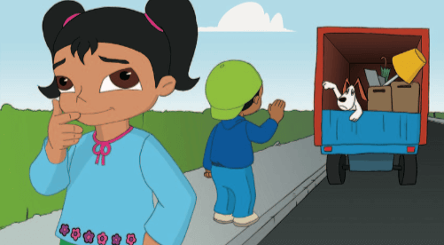
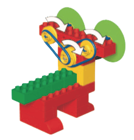
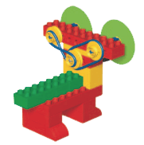
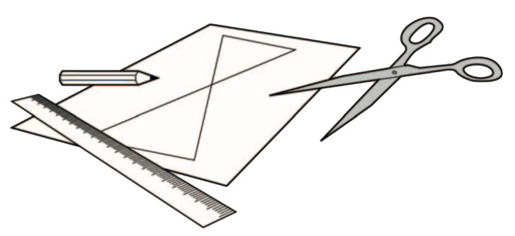

Los vecinos de Sam han decidido mudarse y Sam está muy triste. Su mejor amigo, después de Sara, claro, es
Buddy, el perro de los vecinos. Buddy es el cachorro más bonito del barrio. Tiene grandes ojos y Sam suele
llevar a pasear a Buddy para jugar juntos. ¡Todo eso va a cambiar, ahora que Buddy se muda!
Sara siente pena por Sam y decide alegrarle consiguiendo un nuevo perro con ojos divertidos para que Sam
juegue con él.

¿Puedes ayudar a Sara a construir algo parecido a Buddy con grandes ojos que se muevan? ¡Veamos como se hace!
Construye el perro nuevo de Sam utilizando las instrucciones. Pincha sobre la imagen para acceder a ellas.
• Coloca los discos de los ojos en los ejes, como muestra la figura
• Cada uno de los ejes debe girar libremente
• Si no es así, afloja las ruedas de la polea amarilla para que no rocen con la barra roja

¿Igual u Opuesto?
Girando la nariz puedes hacer que giren los ojos del perro nuevo de Sam. Averigua cual de las configuraciones
de la correa hace girar los ojos del perro en el mismo sentido o en sentido opuesto.

Predice primero qué configuración de la correa hará que los ojos del perro giren en la misma dirección y
cuál hará que los ojos del perro giren en dirección opuesta.
A continuación, prueba las dos configuraciones de la correa.
Pide a los niños que reflexionen sobre sus pruebas preguntándoles cosas como:
• ¿Qué has predicho que ocurriria y por qué?
• Describe lo que ha ocurrido.
• ¿Como te aseguraste de que las pruebas fuesen imparciales?
¿Has ajustado correctamente la correa?
• Describe cómo funciona el modelo.
¿Igual o Diferente?
Cambia la configuración de la correa de la polea para cambiar la velocidad a la que giran los ojos del perro
de Sam. Averigua cual de las configuraciones de la correa hace girar los ojos del perro a la misma
velocidad o a velocidades diferentes.
Predice primero qué configuración de la correa hará que los ojos del perro giren a la misma velocidad y cuál
hará que los ojos del perro giren a velocidades diferentes.
A continuación, prueba si los resultados coinciden con tu predicción.
Adorna el perro nuevo de Sam para que parezca simpático, dulce o de buena onda.
Puede que quieras ponerle orejas, una pajarita, una lengua o incluso un rabo utilizando distintos materiales.
